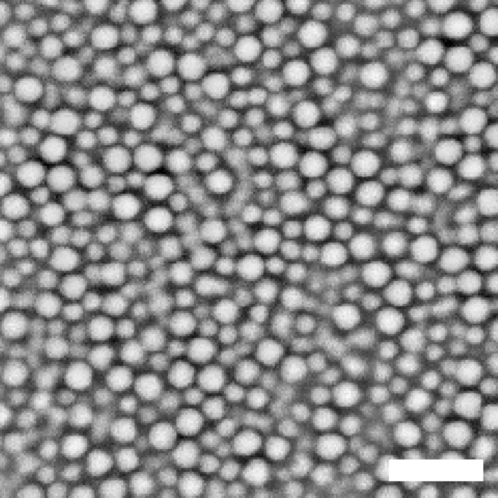
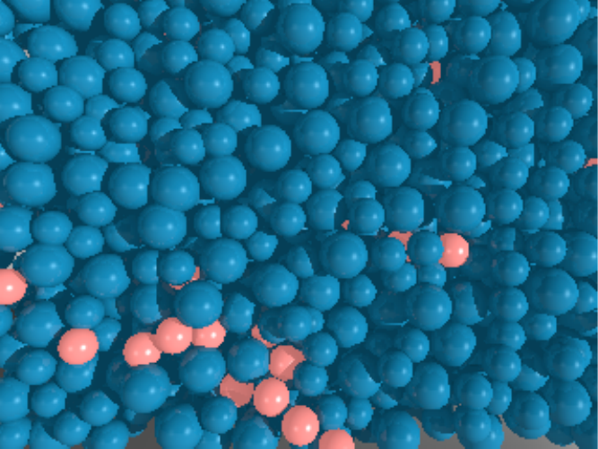
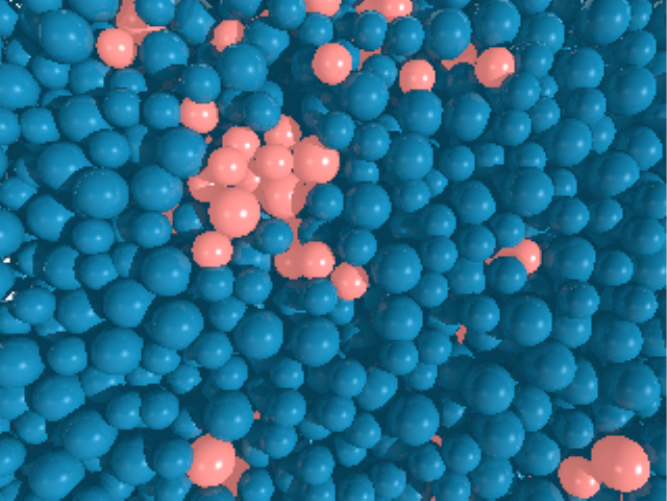
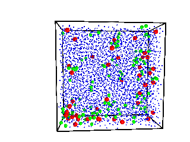
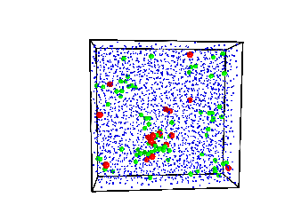
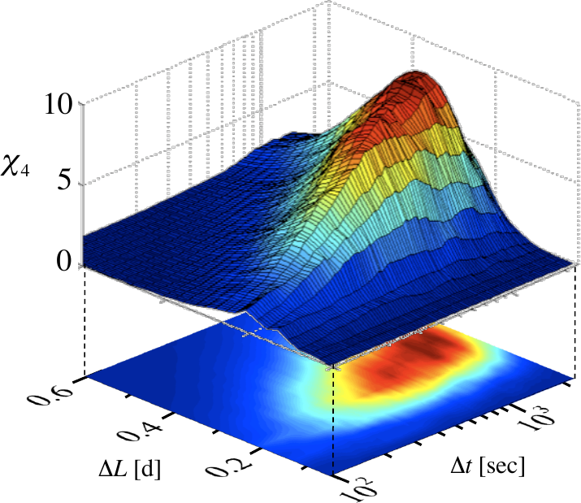
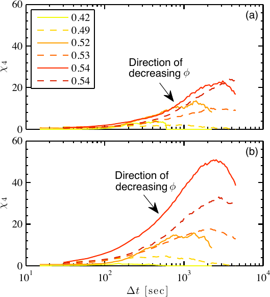
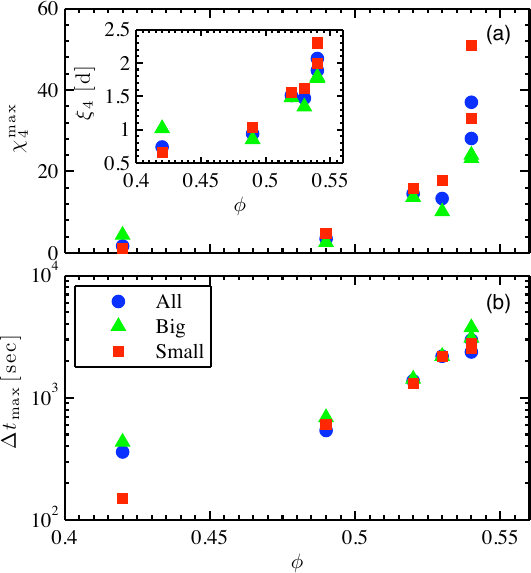

As a dense colloidal suspension is concentrated toward the glass transition, particle motion slows dramatically and becomes spatially uneven — some regions of the sample remain mobile while neighboring regions are nearly arrested. Understanding how this dynamical heterogeneity evolves with concentration provides direct experimental insight into the microscopic origins of the glass transition. This work characterized both the spatial and temporal extent of heterogeneous dynamics in a binary colloidal mixture using confocal microscopy and the four-point susceptibility χ₄.
The sample consisted of a binary mixture of large and small poly(methyl methacrylate) (PMMA) colloidal spheres suspended in a glycerol/water mixture. The two particle sizes suppress crystallization, providing a model glass-forming liquid. Particle positions were tracked in two dimensions using confocal microscopy over a range of volume fractions φ from 0.42 to 0.59, spanning the approach to the glass transition.

Mobile particles — those displacing the most over a fixed time interval — are highlighted in red, while immobile particles appear blue. At lower volume fractions mobile particles are scattered throughout the sample, but as φ increases toward the glass transition, mobile particles form increasingly large, correlated clusters. This spatial clustering is the hallmark of dynamical heterogeneity and signals the emergence of cooperative, glassy dynamics.


The movies below show these mobile-particle clusters evolving in time at the two volume fractions. At the higher concentration the clusters are both larger and longer-lived, reflecting the dramatic slowdown of dynamics near the glass transition.


The four-point susceptibility χ₄ quantifies fluctuations in the mobile fraction as a function of time lag Δt and displacement threshold ΔL. A particle is labeled mobile if its displacement over Δt exceeds ΔL; χ₄ = N·Var[Q(t)] where Q(t) is the instantaneous mobile fraction and N is the particle count. The peak of χ₄ over the (Δt, ΔL) plane identifies the characteristic time scale and length scale at which cooperative motion is most pronounced.

χ₄ was computed separately for large and small particles across all volume fractions. Both species show a pronounced peak that grows and shifts to longer times as φ increases, confirming that cooperative motion becomes larger in spatial extent and slower in temporal scale near the glass transition.

Extracting the peak value χ₄max and the corresponding time τmax for each φ reveals how the spatial extent and characteristic time scale of heterogeneous dynamics diverge near the glass transition. Both χ₄max and τmax increase by an order of magnitude across the concentration range studied, consistent with predictions from mode-coupling theory and the Vogel–Fulcher–Tammann (VFT) scaling used to describe supercooled liquids.
